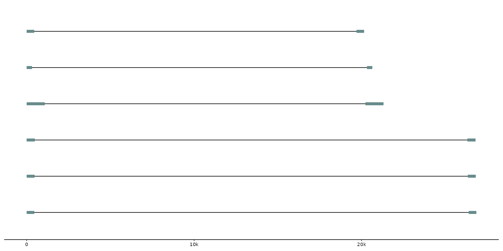
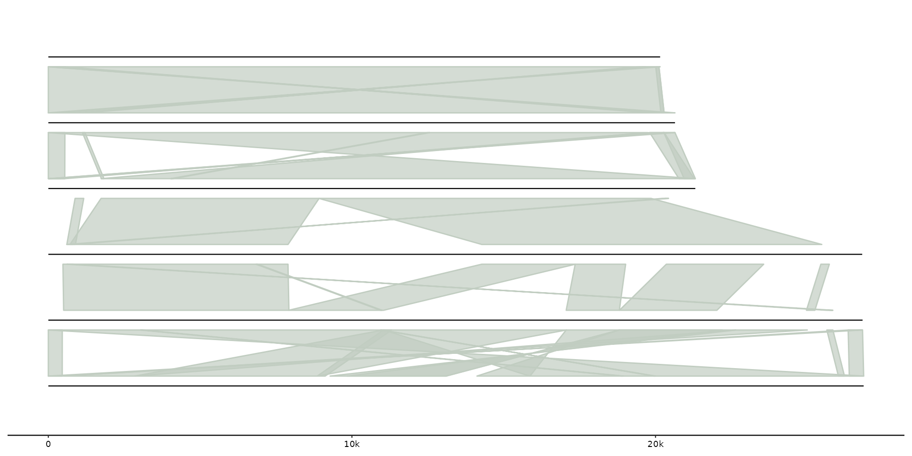
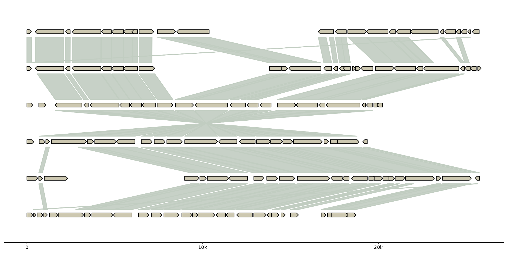
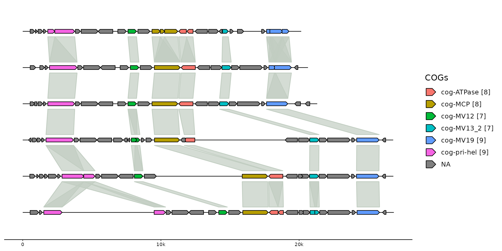
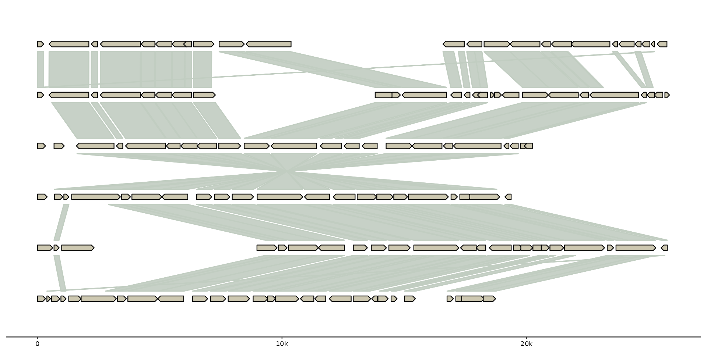
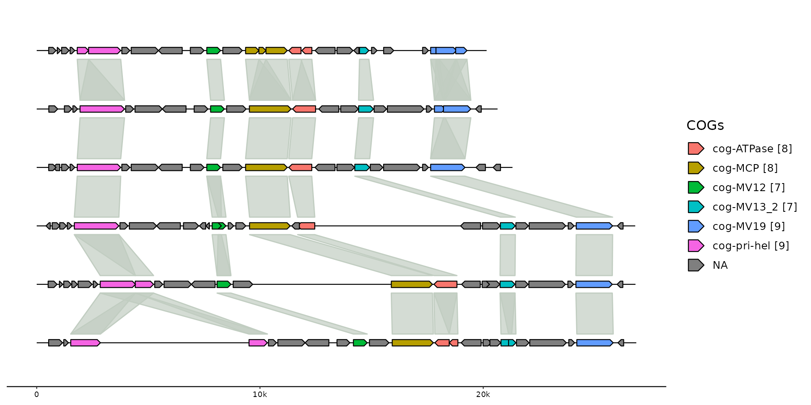

Add different types of tracks
Usage
add_feats(x, ...)
add_links(x, ..., .adjacent_only = TRUE)
add_subfeats(x, ..., .track_id = "genes", .transform = "aa2nuc")
add_sublinks(x, ..., .track_id = "genes", .transform = "aa2nuc")
add_clusters(x, ..., .track_id = "genes")Arguments
- x
object to add the tracks to (e.g. gggenomes, gggenomes_layout)
- ...
named data.frames, i.e. genes=gene_df, snps=snp_df
- .adjacent_only
indicate whether links should be drawn only between vertically adjacent tracks
- .track_id
track_id of the feats that subfeats, sublinks or clusters map to.
- .transform
one of "aa2nuc", "none", "nuc2aa"
Functions
add_feats(): Add feature annotations to sequencesadd_links(): Add links connecting sequences, such as whole-genome alignment data.add_subfeats(): Add features of features, such as gene/protein domains, blast hits to genes/proteins, etc.add_sublinks(): Add links that connect features, such as protein-protein alignments connecting genes.add_clusters(): Add gene clusters or other feature groups. Takes a data.frame with at least two required columnscluster_idandfeat_id. The data.frame is converted to a link track connecting features belonging to the same cluster over their entire length. Additionally, the data.frame is joined to the parent feature track, addingcluster_idand all additional columns to the parent table.
Examples
# Add some repeat annotations
gggenomes(seqs = emale_seqs) %>%
add_feats(repeats = emale_tirs) +
geom_seq() + geom_feat()

# Add all-vs-all whole-genome alignments
gggenomes(seqs = emale_seqs) %>%
add_links(links = emale_ava) +
geom_seq() + geom_link()

# Add domains to genes
genes <- tibble::tibble(seq_id = "A", start = 100, end = 200, feat_id = "gene1")
domains <- tibble::tibble(feat_id = "gene1", start = 40, end = 80)
gggenomes(genes = genes) %>% add_subfeats(domains, .transform = "none") +
geom_gene() + geom_feat()
#> No seqs provided, inferring seqs from feats
#> Only saw `type=NA` in genes and will treat everything as `type="CDS"`.
 # Add protein-protein alignments
gggenomes(emale_genes) %>%
add_sublinks(emale_prot_ava) +
geom_gene() + geom_link()
#> No seqs provided, inferring seqs from feats
#> Transforming sublinks with "aa2nuc". Disable with `.transform = "none"`

# add clusters
gggenomes(emale_genes, emale_seqs) %>%
add_clusters(emale_cogs) %>%
sync() + # works because clusters
geom_link() + # become links
geom_seq() +
# works because cluster info is joined to gene track
geom_gene(aes(fill = ifelse(is.na(cluster_id), NA,
stringr::str_glue("{cluster_id} [{cluster_size}]")
))) +
scale_fill_discrete("COGs")
#> Joining with `by = join_by(feat_id)`
#> Flipping: Cflag_017B,BVI_069,BVI_008A

# Add protein-protein alignments
gggenomes(emale_genes) %>%
add_sublinks(emale_prot_ava) +
geom_gene() + geom_link()
#> No seqs provided, inferring seqs from feats
#> Transforming sublinks with "aa2nuc". Disable with `.transform = "none"`

# add clusters
gggenomes(emale_genes, emale_seqs) %>%
add_clusters(emale_cogs) %>%
sync() + # works because clusters
geom_link() + # become links
geom_seq() +
# works because cluster info is joined to gene track
geom_gene(aes(fill = ifelse(is.na(cluster_id), NA,
stringr::str_glue("{cluster_id} [{cluster_size}]")
))) +
scale_fill_discrete("COGs")
#> Joining with `by = join_by(feat_id)`
#> Flipping: Cflag_017B,BVI_069,BVI_008A
